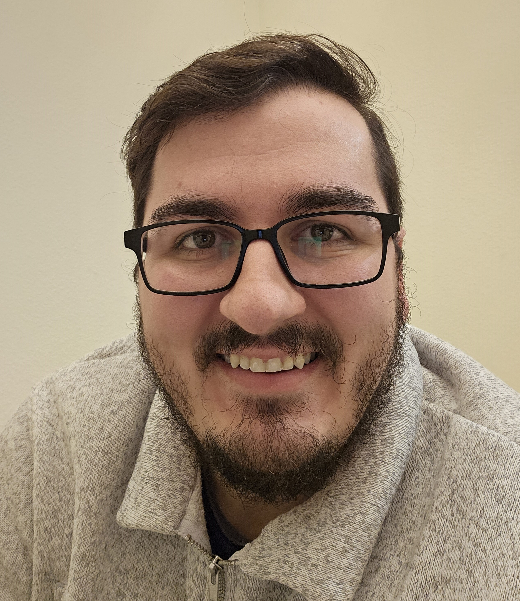

Kevin Breunig

Summary
A Software developer with 7 years of experience in the full software
development cycle. I enjoy all aspects of the coding process and solving
problems through software that gives end users a smooth user experience. I
welcome new challenges and any learning opportunities they may provide.
Education
Bachelor of Science - Comprehensive Computer Science (2011 - 2016)
University of Wisconsin - Eau Claire
Work Experience
American Data - Software Developer (May 2016 - Present)
- Design and develop new modules to improve user efficiency and experience.
- Maintain and adapt legacy code to adapt to meet changing needs.
- Brainstorm with clinical support team for ways to enhance user experience.
- Refactor large portions of complex systems to improve quality
and readability of code and increase application speed from between 20% to 300%.
- Work independently as the lead MDS developer using
specifications from CMS.gov to create fillable forms that are
enforced by a strict set of rules to ensure accurate completion.
- Plan out timelines for annual updated CMS specifications and
delegate tasks between multiple departments to deliver updates by deadlines.
- Devise, present and help implement processes to improve communication within project teams.
- Communicate directly with clients to debug and resolve issues.
Skills
- Object Pascal
- Java
- Python
- MySQL
- Microsoft SQL
- HTML
- CSS
Certifications
Udemy Platform
- The Ultimate MySQL Bootcamp: Go From SQL Beginner to Expert
- Java Programming Masterclass
My Portfolio
Contact Details